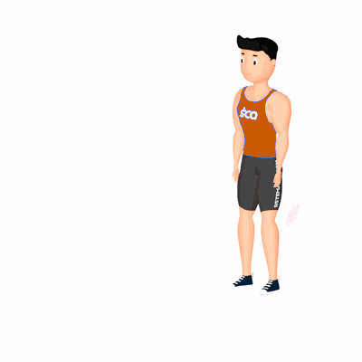

Minhoca

O exercício trabalha no fortalecimento e hipertrofia dos músculos do abdômen, costas e braços.
Ficha Técnica
Tipo: CrossFit
Grupo Muscular: Corpo
Aparelho: Nenhum
Músculos: Nenhum
Como realizar
- De pé, mantenha os pés na largura dos quadris e, em seguida, incline o tronco para a frente, posicionando as mãos no chão, na frente dos pés;
- Desloque o peso do corpo para as mãos e comece a movimentá-las para a frente;
- 3.Contraia os glúteos, mantenha o tronco firme, deixando as costas em posição neutra enquanto caminha com as mãos;
- Continue movimentando-as para frente, usando a palma da mão como apoio ou o antebraço, até chegar à posição de prancha;
- Quando chegar à posição de prancha, permaneça parado por 2 segundos e retorne à pose inicial, revertendo o movimento.
 RC STORE
RC STORE